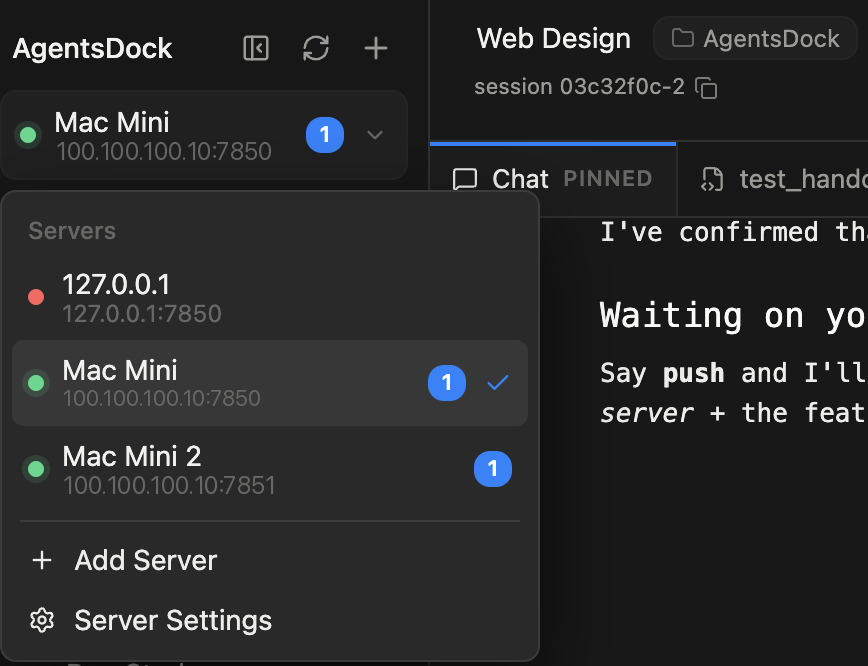
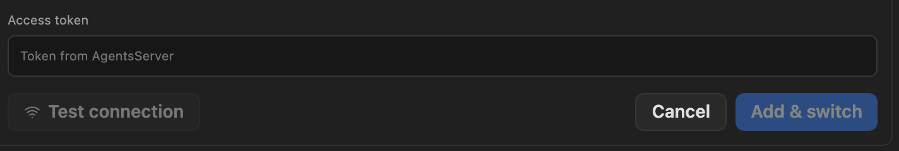
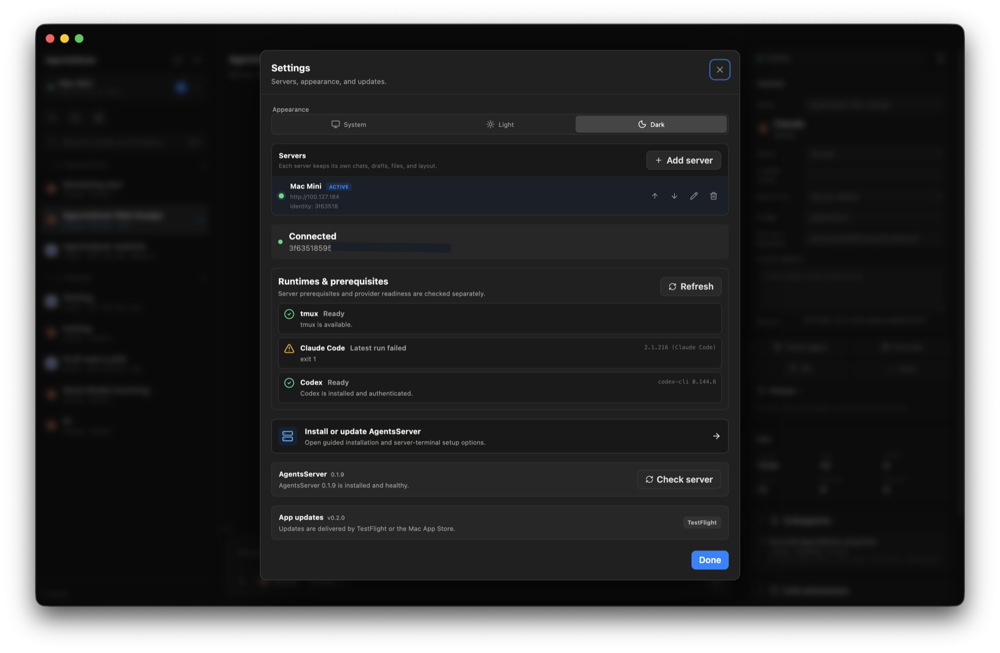

文件
安裝與連線
- AgentsServer 在你自己的遠端機器上執行實際工作。
- 在你的裝置上開啟 AgentsDock 用戶端，即可連線到伺服器。遠端機器只需設定一次，之後就能從多部裝置使用。
開始之前
- 一臺由你掌控的遠端機器（Linux，或 Apple silicon Mac）來執行伺服器。先在這臺機器上安裝 Node.js/npm 和
uv。tmux是可選的，只有應用程式內終端機需要它。 - 一個 Tailscale 帳號（可選）——僅在需要從區域網路之外存取遠端機器時才用得到。在同一 Wi‑Fi 下可以直接用機器的區域網路 IP；Tailscale 讓你能從其他任何地方安全連線。
- 你計畫使用的服務供應商 CLI（Claude Code、Codex、OpenCode 或 Cursor）已安裝在遠端機器上。
- 一臺能執行 AgentsDock 用戶端的裝置：macOS、Windows、Linux、iPhone、iPad 或 Android。
AgentsDock 由你自行架設。對話、檔案和 API 金鑰都留在你的遠端機器上，用戶端讓你從不同裝置連線並操作同一台伺服器。
第一步架設遠端機器
在負責執行工作的那臺機器上做一次即可。它會持續執行，你的各個裝置都連線到它。
1安裝 AgentsServer
在遠端機器上，用將要執行伺服器的使用者安裝 AgentsDock CLI：
npm install -g agentsdock在一臺新機器上，這個指令也會建立並啟動預設伺服器。標準安裝不需要 clone repo。不要使用 sudo。
[7/7] AgentsServer 1.0.10 is ready
Your new service is up!
Server URL http://100.100.100.12:7850
Other local/network addresses:
http://192.168.1.23:7850
You already have
AgentsServer running
tmux available
AGENTSDOCK_SETUP_RESULT={"server_url":"http://100.100.100.12:7850","access_token":"ad_tok_...","service":"launchd","tailscale_ip":"100.100.100.12","server_version":"1.0.10"}伺服器預設監聽 7850 連接埠，並在遠端機器上持續執行——你的裝置連線的就是它。
之後想確認伺服器狀態，可以執行：
agentsdock statusServer (default):
Status: running
Address: http://100.100.100.12:7850 (Tailscale / other networks)
http://192.168.1.23:7850 (Same Wi-Fi / LAN)
http://127.0.0.1:7850 (This machine only)
Version: 1.0.10
Port: 7850伺服器會用一個 token 保護。連線裝置時，在遠端機器上執行下面的指令檢視：
agentsdock token2在遠端機器上登入服務供應商 CLI
安裝並登入你要讓 AgentsDock 使用的服務供應商 CLI：Claude Code、Codex、OpenCode 或 Cursor。按服務供應商支援的正常方式登入即可，例如瀏覽器登入或設定 API key。自訂 endpoint 的設定見連線 agents。
3在遠端機器上安裝 Tailscale 可選
僅在需要從區域網路之外存取遠端機器時才需要。如果你的裝置和遠端機器在同一 Wi‑Fi 下，可以跳過這一步，在第二步直接使用機器的區域網路 IP。
在遠端機器上安裝 Tailscale 並登入。這會給機器分配一個私有的 100.x.x.x 地址，你的其他裝置可以從任何地方存取它——無需向公網開放任何連接埠。記下這個地址（或機器的 Tailscale 主機名稱），第二步會用到。
有不止一臺機器？在每臺機器上重複第一步。AgentsDock 可以同時儲存多個伺服器——它們都會出現在側邊欄頂部的伺服器選單裡，一鍵即可切換。

第二步從你的裝置連線
在你想作為 AgentsDock 用戶端使用的每臺裝置上重複以下步驟。
1下載 AgentsDock 用戶端
到下載區選擇你的平臺（macOS、Windows、Linux、iPhone、iPad 或 Android），下載並開啟用戶端。
2在裝置上安裝 Tailscale 可選
僅當你在遠端機器上安裝了 Tailscale 時才需要。在這臺裝置上也安裝它並用同一帳號登入，這樣兩端就在同一個私有網路裡，應用程式才能連到伺服器。若在同一區域網路內，跳過這一步，直接用遠端機器的區域網路 IP。
3連線到你的伺服器
在 AgentsDock 中新增伺服器，填入遠端機器的地址——它的 Tailscale 100.x.x.x 地址加連接埠 7850——然後把第一步得到的 token 貼上到token欄位。它長這樣：
ad_tok_9f3b7c2e•••••••••••••••••••• (sample)這個 token 存放在你的伺服器機器上——也就是第一步架設的遠端機器，而不是你正在用來連線的裝置。想再次獲取，在遠端機器上執行：
agentsdock token點選測試連線（Test connection）確認應用程式能連到伺服器，再點新增並切換（Add & switch）。連線成功後：新建一個對話，選擇一個服務供應商，並指定遠端機器上的一個工作目錄。


要連線不止一臺機器？用同樣的方法逐個新增——開啟側邊欄頂部的伺服器選單，選擇 Add Server。之後你隨時可以在該選單裡切換伺服器。
連不上？
- 確認在同一臺裝置的瀏覽器裡能開啟伺服器 URL——瀏覽器打不開的話，應用程式也連不上。
- 檢查兩端的 Tailscale 都已開啟並登入，並且你用的是遠端機器的
100.x.x.xTailscale 地址（而不是只在遠端機器自己網路裡有效的區域網路 IP）。 - 確保 URL 帶了連接埠（
7850），且 token 完全一致、沒有多餘空格。
連線好了？到功能指南看看 AgentsDock 能做什麼 →